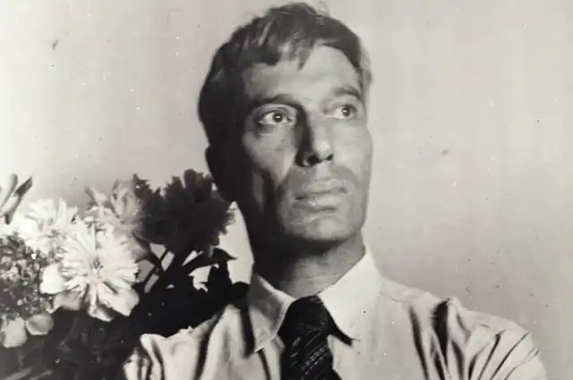
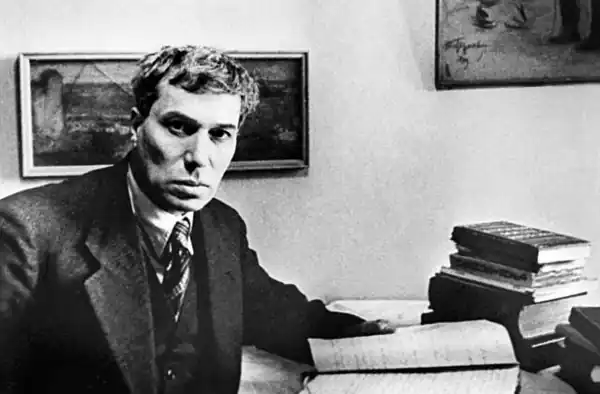
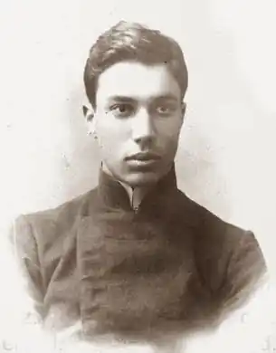

Його після смерті називали "Гамлет ХХ століття", "Лицар російської поезії", "вічності Заручник", "Неуставный класик", "Промениста душа", "Один на всіх і у кожного свій"…
Я весь світ змусив плакати
Над красою землі моєї. (Борис Пастернак. "Нобелівська премія", 1959) Борис Пастернак… після Його смерті називали "Гамлет ХХ століття", "Лицар російської поезії", "вічності Заручник", "Неуставный класик", "Промениста душа", "Один на всіх і у кожного свій"… Поет з поетів народився 104 роки тому, 29 січня (10 лютого) 1890 року в Москві. Батько – відомий художник Леонід Пастернак, мати – обдарована піаністка Розалія Кауфман. Борис Пастернак міг стати художником (під впливом батька), музикантом (його благословляв Скрябін), вченим-філософом (вчився в Німеччині, в університеті Марбурга), але став поетом. Остаточний поворот до поетичної творчості відбувся в 1912 році: "Я грунтовно зайнявся стихописанием. Вдень і вночі, і коли доведеться я писав про море, про світанку, про літньому будинку, про кам'яному вугіллі Гарцу", – згадував Пастернак в автобіографічній "Охоронної грамоти". І ще одне важливе визнання: "З малих років був схильний до містики і забобонам і охоплений тягою до провиденциальному…" У всьому мені хочеться дійти До самої суті, У роботі, у пошуках шляху, У серцевої смути. І все ж Пастернак був швидше ірраціональний, ніж раціональний. Він жив почуттями. Лютий. Дістати чорнил і плакати! Писати про лютому ридма, Поки гуркіт водяної сльота Весною чорною горить Стан "ридма" стало візитною карткою поета на ранньому етапі. Пізніше він тяжів до простоти, але так і не став простим поетом для народу, а залишився кумиром для обраних. У 1913 році вийшла перша поетична збірка поета "Близнюк у хмарах" тиражем 200 примірників. За густину насичення асоціативними образами і парадоксальними метафорами Пастернака звинуватили в "неросійської лексиці". Не уникнув поет і впливу модного на початку XX століття футуризму, особливо після знайомства з Маяковським. Але в подальшому шляху Пастернака і Маяковського розійшлися. Марина Цвєтаєва відзначала різну цінність і сутність Пастернака і Маяковського: "Пастернака ніколи не буде площі. У нього буде, і є вже, безліч самотніх, самотнє безліч спраглих, яких він, відокремлений джерело, напуває… На Маяковського же, на площі, або б'ються, або спеваются… Дія Пастернака одно дії сну. Ми його не розуміємо. Ми в нього потрапляємо… Пастернак – чара. Маяковський – яву, белеющий світло білого дня… Від Пастернака думається. Від Маяковського робиться…" (1932). У грудні 1916 року вийшла книга Бориса Пастернака "Поверх бар'єрів", в якій він відмовився від "романтичної манери", і, тим не менш, "прості слова" і "нові думки" билися, як золоті рибки в метафоричному коші. У новій книзі яскраво проявилась особливість поетики Пастернака: він примелькавшуюся дійсність чарівним чином майже завжди перекладав в "нову категорію", тобто перетворював її. Улюблена – жах! Коли любить поет, Закохується бог неприкаяний. І хаос знову виповзає на світ, Як у часи копалин… Влітку 1917 року Пастернак збирає книги "Сестра моя жизнь". Вийшовши друком у 1922 році, вона робить автора знаменитим. Раніше вірші, що входять в книгу, ходили в списках. Як зазначав Брюсов: "Молоді поети знали напам'ять вірші Пастернака, ще ніде не з'явилися в друку, і йому наслідували повніше, ніж Маяковському, тому що намагалися схопити саму сутність його поезії". Багато зрозуміли, що Пастернак – поет навіть не від Б-га, а сам Б-р-письменник, тайновидець і тайносоздатель, хоча сам Пастернак часто себе представляв у віршах всього лише як "свідок" – свідок світової історії. Сестра моя – життя і сьогодні в розливі Розбилися весняним дощем про всіх, Але люди в брелоках високо брюзгливы І чемно жалять, як змії у вівсі. А як не процитувати хоча б початок вірша Пастернака "Визначення поезії"? Це – круто вже налите свист, Це – клацання здавлених крижинок. Це – ніч, що леденить лист, Це – двох солов'їв поєдинок Ось так лірично і потужно починав Пастернак. Потім послідували повість "Дитинство Люверс", збірник "Теми і варіації", поеми "Висока хвороба", "Спекторський". В 1931 році вийшла "Охоронна грамота", у 1932 – "Друге народження". У цій книзі Пастернак остаточно відкинув футуристичну поетику і перейшов до багатошаровості вірша, його смисловий ясності. У 30-ті роки становище Пастернака було досить неоднозначним. Як точно визначив син і біограф поета Євген Пастернак, "все, за малим винятком, визнавали його художня майстерність. При цьому його одностайно дорікали в світогляді, що не відповідає епосі, і беззастережно вимагали тематичної та ідейної перестройкиѕ" Місце Бориса Пастернака в радянській літературі визначив кремлівський бард Дем'ян Бідний: А ззаду, в заграві легенд, Дурень, герой, інтелігент. Від поета вимагали вірнопідданого служіння, а він цього не розумів – скоріше, не хотів розуміти. "Він чув звуки, невловимі для інших, – зазначав Ілля Еренбург, – чув, як б'ється серце і як росте трава, але вчини століття так і не розчув…" Про це свідчить і телефонна розмова Пастернака зі Сталіним у травні 1934 року. Пастернак намагався захистити арештованого Мандельштама, а заразом поговорити з вождем про життя і смерті, але Сталін обірвав поета-філософа: "А вести з тобою сторонні розмови мені нема чого". Наума Коржавина на цей рахунок є чудові рядки: І там, в Кремлі, в безодні мороку, Хотів зрозуміти двадцяте століття Суворий жорстка людина, Не розумів Пастернака. Так, Сталін навряд чи розумів Пастернака і взагалі вважав його людиною не від світу цього. Може бути, тому і не торкнувся, залишив в саду поезії як екзотична квітка. У серпні 1934 року проходив Перший з'їзд радянських письменників. Борис Пастернак – делегат з'їзду. У звітній доповіді про поезії Микола Бухарін сказав: "Борис Пастернак є поетом, найбільш віддаленим від злоби дня … Він, безумовно, приймає революцію, але він далекий від своєрідного техніцизму епохи, від шуму побуту, від пристрасної боротьби. Зі старим світом він ідейно порвав ще під час імперіалістичної війни і свідомо став "поверх бар'єрів". Кривава чаша, торгашество буржуазного світу були йому глибоко осоружні, і він "відколовся", пішов від світу, замкнувся в перламутрову раковину індивідуальних переживань, ніжних і тонких… Це – втілення цнотливого, але замкнутого в собі, лабораторного мистецтва, наполегливої і копіткої роботи над словесною формою… Пастернак оригінальний. І В цьому його сила-і його слабкість одновременноѕ оригінальність переходить у нього в егоцентризм…" Крутив Бухарін: любив Пастернака, але змушений був його критикувати. Про Пастернака на письменницькому з'їзді говорили багато. Олексій Сурков зазначив, що Пастернак заманив "весь всесвіт на дуже вузьку майданчик своєї ліричної кімнати". І, мовляв, треба йому виходити на "просторий світ"ѕ У 1936 році Борис Леонідович почав облаштовуватися в підмосковному Передєлкіно. Вів себе вкрай незалежно. У 37-му відмовився поставити підпис під зверненням письменників з вимогою розстріляти Тухачевського і Якіра. Відмова як виклик владі. Пастернака і тут не чіпали – просто перестали друкувати. Лише в 1943 році вийшла книга віршів "На ранніх поїздах", а влітку 45-го – останнє прижиттєве видання "Вибрані вірші і поеми". У 1948 році весь тираж "Обраного" знищили. І на долю поета залишилися лише переклади – жити-то було треба! Гул затих. Я вийшов на підмостки… – це початок вірша "Гамлет". А закінчується вона пронизливим відчуттям самотності: Я один, все тоне в фарисействі. Життя прожити – не поле перейти. На початку 1946 року Пастернак, за його словами, приступає до "великої прози". Початкові "Хлопчики і дівчатка" переросли в роман "Доктор Живаго", завершений до осені 1956 року. Як відомо, роман потрапив за кордон. 23 жовтня 1958 року Борису Пастернаку присудили Нобелівську премію. І тут розпочалась істерична цькування письменника: як він посмів надіслати рукопис на ворожий Захід? Колеги штовхали Пастернака ногами, приклеюючи йому злісні ярлики типу "літературний бур'ян"… А Пастернак дивувався, чому він потрапив у розряд гнаних. Я пропав, як звір у загоні. Десь люди, воля, світло, А за мною шум погоні, Мені назовні ходу немає… – писав він у вірші "Нобелівська премія". Цькування призвела до швидкоплинної хвороби, і Пастернак помер на 71-му році життя. За місяць до своєї смерті він написав: "сліпому нагоди долі мені пощастило висловитися повністю, і те, чим ми так звикли жертвувати і що є найкраще в нас, – художник опинився в моєму випадку не затертий і не розтоптаним". Виник посмертний "пастернаковский бум". Вся інтелігенція запоєм читала поета і слухала його заповітами. У вірші "Бути знаменитим негарно…" Пастернак писав: Інші по живому сліду Пройдуть твій шлях за п'яддю п'ядь. Але поразка від перемоги Ти сам не повинен відрізняти. І має ні часточкою Не відступатися від особи, Але бути живим, живим і тільки, Живим і тільки, до кінця. Незадовго до смерті поета в Передєлкіно приїжджав знаменитий американський композитор і диригент Леонард Бернстайн. Він жахався порядків у Росії і нарікав на те, як важко вести розмову з міністром культури. На що Пастернак відповів: "При чому тут міністри? Художник розмовляє з Б-гом, і той ставить йому різні уявлення, щоб йому було що писати. Це може бути фарс, як у вашому випадку, а може бути трагедияѕ" І тут доречно навести характеристику Еренбурга, яку він дав Пастернаку: "… Жив він поза товариства не тому, що дане суспільство йому не підходила, а тому, що, будучи товариським, навіть веселим з іншими, знав тільки одного співрозмовника: самого себе… Борис Леонідович жив для себе – егоїстом він ніколи не був, але він жив у собі, з собою і собою…" Я не тримаю. Іди, милосердуй). Іди до інших. Вже написаний Вертер, А в наші дні і повітря пахне смертю: Відкрити вікно – що жили відчинити. Це написано Пастернаком в далекому 1918 році. Вірш називається "Розрив". Його остання любов, Ольга Івінська, заплатила за свої почуття надмірно високу ціну. Але це окрема тема, як і теми "Пастернак і Маяковський", "Пастернак і Мандельштам", "Пастернак і Цвєтаєва". Цікаво було б вивчити тему "Пастернак і гроші". Коли він помер, його гардеробі залишилася лише пара батькових черевик, привезених з Англії після смерті батька, і дві курточки, одна з них саморобна. Для поета злато – дрібниця. Головне – його золоте перо. Натхненні рядки, віра в те, що "силу підлості і злоби подолає дух добра".